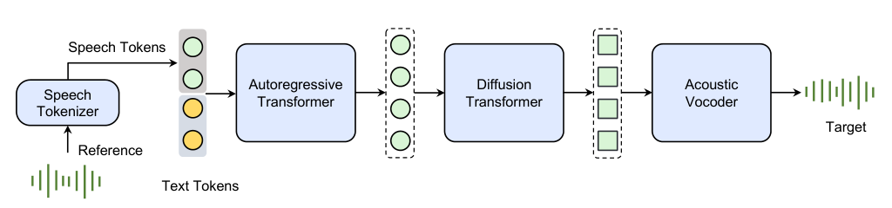
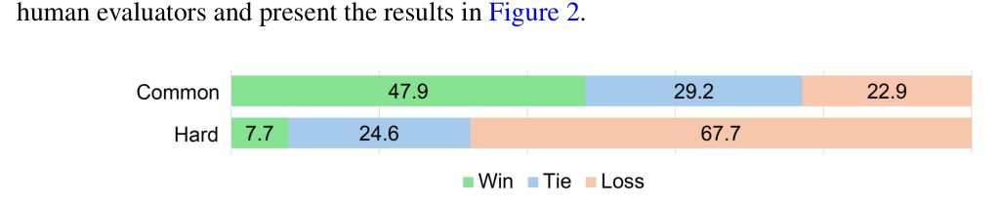
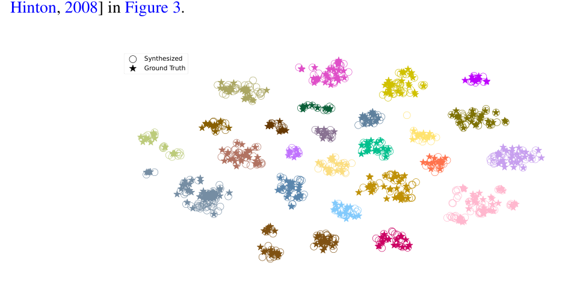
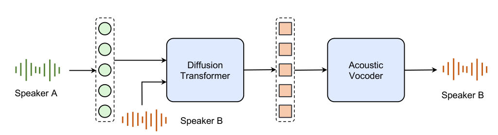
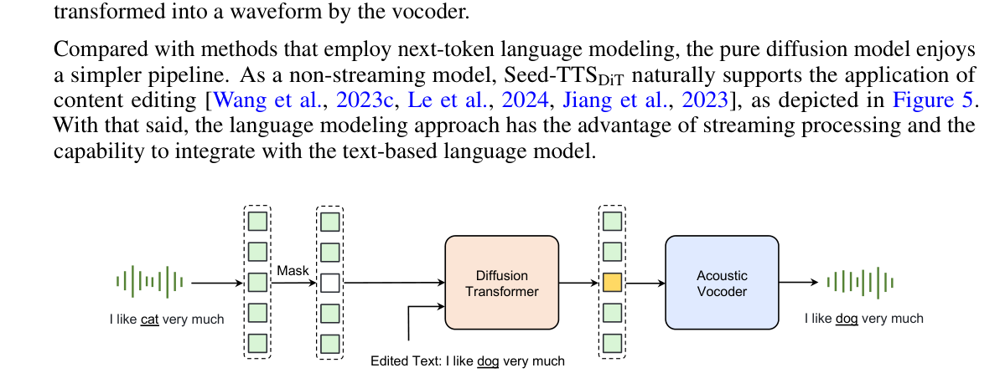
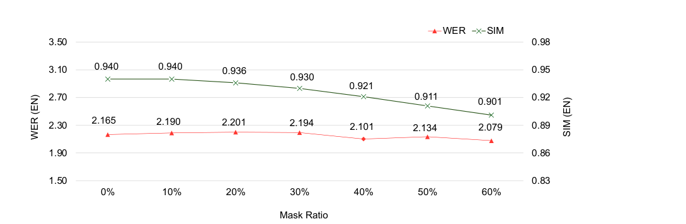
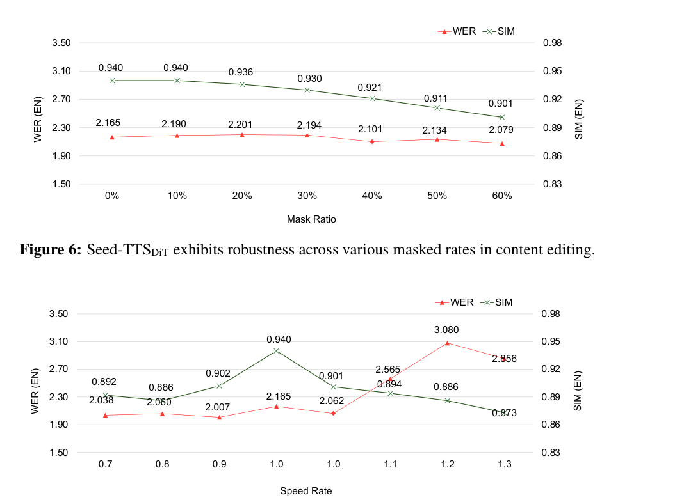

Seed Team, ByteDance∗
摘要Abstract
We introduce Seed-TTS, a family of large-scale autoregressive text-to-speech (TTS) models capable of generating speech that is virtually indistinguishable from human speech. Seed-TTS serves as a foundation model for speech generation and excels in speech in-context learning, achieving performance in speaker similarity and naturalness that matches ground truth human speech in both objective and subjective evaluations. With fine-tuning, we achieve even higher subjective scores across these metrics. Seed-TTS offers superior controllability over various speech attributes such as emotion and is capable of generating highly expressive and diverse speech for speakers in the wild. Furthermore, we propose a self-distillation method for speech factorization, as well as a reinforcement learning approach to enhance model robustness, speaker similarity, and controllability. We additionally present a non-autoregressive (NAR) variant of the Seed-TTS model, named Seed-TTSDiT, which utilizes a fully diffusion-based architecture. Unlike previous NAR-based TTS systems, Seed-TTSDiT does not depend on pre-estimated phoneme durations and performs speech generation through end-to-end processing. We demonstrate that this variant achieves comparable performance to the language model-based variant and showcase its effectiveness in speech editing. We encourage readers to listen to demos at https://bytedancespeech.github.io/seedtts_tech_ report.
我们介绍 Seed-TTS，这是一系列大规模自回归（autoregressive）文本转语音（TTS）模型，能够生成几乎与真人语音无法区分的语音。Seed-TTS 是语音生成领域的基础模型，擅长语音上下文学习（in-context learning），在客观与主观评测中，其说话人相似度与自然度均达到与真人语音相当的水平。通过微调，我们在这些指标上还能获得更高的主观得分。Seed-TTS 对情感等多种语音属性提供了出色的可控性，能够为野外的任意说话人生成极具表现力且多样化的语音。此外，我们提出了一种用于语音因子分解的自蒸馏方法，以及一种用于增强模型鲁棒性、说话人相似度与可控性的强化学习（RL）方法。我们还提出了 Seed-TTS 的一个非自回归（NAR）变体，名为 Seed-TTSDiT，它采用完全基于扩散模型的架构。与以往的 NAR TTS 系统不同，Seed-TTSDiT 不依赖预估计的音素时长，而是以端到端方式完成语音生成。我们证明该变体能够达到与语言模型版本相当的性能，并展示其在语音编辑任务上的有效性。我们鼓励读者前往 https://bytedancespeech.github.io/seedtts_tech_ report 试听演示音频。
1 引言Introduction
We present Seed-TTS, a family of speech generation models capable of synthesizing speech with human-level naturalness and expressiveness. It can also create controllable, high-fidelity synthesized speech based on a short enrollment speech clip in a zero-shot manner. This model has significant potential in applications such as virtual assistants, audio books, video dubbing, and more.
我们提出 Seed-TTS，这是一系列语音生成模型，能够合成具有人类水平自然度与表现力的语音。它还可以仅凭一段简短的注册语音，以零样本（zero-shot）方式生成可控、高保真的合成语音。该模型在虚拟助手、有声书、视频配音等应用中具有巨大潜力。
The primary goal of Seed-TTS is to create a speech generation model that approaches human-level speech, even for arbitrary speakers in the wild with little data. Seed-TTS has been evaluated on three tasks: zero-shot speech in-context learning (ICL), speaker fine-tuning, and emotion control. We release the configuration of our test dataset for future benchmarking and also discuss the model’s behavior regarding product deployment.
Seed-TTS 的首要目标是打造一个逼近人类水平的语音生成模型，即便面对只有少量数据的野外任意说话人也能胜任。Seed-TTS 在三个任务上进行了评测：零样本语音上下文学习（ICL）、说话人微调和情感控制。我们公开了测试数据集的配置，供后续基准测试使用，并讨论了模型在产品部署中的行为表现。
We further introduce two novel extension techniques that can significantly enhance model performance: speech factorization via self-distillation and preference biasing through reinforcement learning (RL). For the former, unlike commonly applied methods such as feature engineering [Chen et al., 2023, Wang et al., 2024a, 2023a] or specialized loss formulations [Ju et al., 2024, Łajszczak et al., 2024] or model designs [Qian et al., 2019, Jiang et al., 2023], our simple self-distillation scheme enables Seed-TTS to achieve high-quality timbre disentanglement without altering model ∗Please cite this work as “Seed-TTS (2024)”. The full statement of author contributions and acknowledgments can be found at the end of the document. Correspondence regarding this technical report should be sent to Seed-TTS@bytedance.com. structure or loss function. For the latter, we employ RL techniques [Kaelbling et al., 1996, Li, 2017] and demonstrate their effectiveness in improving robustness, speaker similarity, and controllability.
我们进一步提出两项能够显著提升模型性能的新扩展技术：通过自蒸馏实现的语音因子分解，以及通过强化学习（RL）实现的偏好偏移。对于前者，与特征工程 [Chen et al., 2023, Wang et al., 2024a, 2023a]、专门的损失函数设计 [Ju et al., 2024, Łajszczak et al., 2024] 或模型结构设计 [Qian et al., 2019, Jiang et al., 2023] 等常用方法不同，我们简单的自蒸馏方案使 Seed-TTS 无需修改模型结构即可实现高质量的音色解耦（此处原文穿插版权脚注“∗Please cite this work as “Seed-TTS (2024)”，为抽取残留）。作者贡献与致谢的完整说明见文末。有关本技术报告的通信请发送至 Seed-TTS@bytedance.com（此句后半“structure or loss function”为上句被脚注截断的部分，译文已并入上句：或损失函数）。对于后者，我们采用 RL 技术 [Kaelbling et al., 1996, Li, 2017]，并证明其在提升鲁棒性、说话人相似度和可控性方面的有效性。
We then compare the advantages and disadvantages of two major categories for speech generation: language model-based [Wang et al., 2023b, Zhang et al., 2023, Łajszczak et al., 2024] and diffusionbased [Ju et al., 2024, Gao et al., 2023a, Chen et al., 2022a, Lovelace et al., 2023] modeling. To this end, we designed a non-autoregressive (NAR) variant of Seed-TTS, named Seed-TTSDiT, which is a fully diffusion-based speech generation model that directly predicts output speech latent representations in an end-to-end manner, rather than relying on a separate duration prediction module, as in previous NAR methods [Tan et al., 2022, Le et al., 2024, Du et al., 2024, Jiang et al., 2023, Ren et al., 2019, Yi et al., 2022a,b]. We show that Seed-TTSDiT performs comparably to autoregressive language model-based methods and demonstrate its speech editing capabilities.
随后，我们比较了语音生成两大流派的优缺点：基于语言模型的方法 [Wang et al., 2023b, Zhang et al., 2023, Łajszczak et al., 2024] 与基于扩散模型的方法 [Ju et al., 2024, Gao et al., 2023a, Chen et al., 2022a, Lovelace et al., 2023]。为此，我们设计了 Seed-TTS 的一个非自回归（NAR）变体，名为 Seed-TTSDiT，它是一个完全基于扩散模型的语音生成模型，以端到端方式直接预测输出语音的潜在表征，而不像以往 NAR 方法 [Tan et al., 2022, Le et al., 2024, Du et al., 2024, Jiang et al., 2023, Ren et al., 2019, Yi et al., 2022a,b] 那样依赖单独的时长预测模块。我们表明 Seed-TTSDiT 的性能可与基于自回归语言模型的方法相媲美，并展示了其语音编辑能力。
Lastly, we discuss potential applications and limitations of Seed-TTS, as well as several challenges we encountered during development, including those related to building socially responsible artificial intelligence (AI). The capabilities and limitations of Seed-TTS give rise to significant and novel challenges in multimedia and safety applications that we believe must be carefully studied when considering their potential societal impact.
最后，我们讨论了 Seed-TTS 的潜在应用与局限，以及开发过程中遇到的若干挑战，其中包括构建对社会负责的人工智能（AI）所面临的挑战。Seed-TTS 的能力与局限给多媒体和安全应用带来了重大而新颖的挑战，我们认为在考量其潜在社会影响时必须认真研究这些挑战。
Our key contributions are as follows:
我们的主要贡献如下：
• We introduce Seed-TTS, a family of speech generation models capable of generating highly expressive, human-like speech. We demonstrate that Seed-TTS achieves state-of-the-art (SOTA) performance in multiple evaluations. Under a zero-shot ICL setup, we show that Seed-TTS is able to generate robust, similar, and highly dynamic speech that is indistinguishable from human speech. • We present a novel self-distillation extension of Seed-TTS for timbre disentanglement and demonstrate SOTA performance in the voice conversion task. • We introduce a novel RL-based post-training extension for Seed-TTS, which holistically improves the model’s performance. • We present a novel fully diffusion-based variant of Seed-TTS, which achieves superior generation quality. We show its advantages in the speech editing task and compare it with its language model-based counterpart.
• 我们提出 Seed-TTS，一系列能够生成极具表现力、接近人类语音的语音生成模型。我们证明 Seed-TTS 在多项评测中达到 SOTA 性能。在零样本 ICL 设定下，我们证明 Seed-TTS 能够生成鲁棒的、相似度高的、高动态的语音，与真人语音无法区分。• 我们提出一种新颖的 Seed-TTS 自蒸馏扩展用于音色解耦，并在语音转换任务上展示 SOTA 性能。• 我们为 Seed-TTS 引入一种新颖的基于 RL 的后训练扩展，全面提升模型性能。• 我们提出一种新颖的、完全基于扩散模型的 Seed-TTS 变体，取得更优的生成质量。我们展示了它在语音编辑任务上的优势，并将其与基于语言模型的对应版本进行了比较。
2 方法Method
Seed-TTS is an autoregressive transformer-based [Touvron et al., 2023, Vaswani et al., 2017] model, as depicted in Figure 1. Our system consists of four main building blocks: a speech tokenizer, a token language model, a token diffusion model, and an acoustic vocoder. We emphasize that Seed-TTS is trained on large amounts of data (orders of magnitudes larger than the previously largest TTS systems) to enable strong generalization and emergent abilities.
Seed-TTS 是一个基于自回归 Transformer [Touvron et al., 2023, Vaswani et al., 2017] 的模型，如 Figure 1 所示。我们的系统由四个主要模块组成：语音分词器、token 语言模型、token 扩散模型和声学声码器。我们要强调，Seed-TTS 是在海量数据上训练的（比以往最大的 TTS 系统还要大几个数量级），以获得强大的泛化能力和涌现能力。

图Figure 1. An overview of the Seed-TTS inference pipeline. (1) The speech tokenizer learns tokens from reference speech. (2) The autoregressive language model generates the speech tokens based on the condition text and speech. (3) The diffusion transformer model generates continuous speech representations given generated speech tokens in a coarse-to-fine manner. (4) The acoustic vocoder yields higher-quality speech from the diffusion output.
图 1. Seed-TTS 推理流程概览。(1) 语音分词器从参考语音中学习 token。(2) 自回归语言模型基于条件文本与语音生成语音 token。(3) 扩散 Transformer 模型以由粗到细的方式，根据生成的语音 token 生成连续语音表征。(4) 声学声码器从扩散输出中产出更高质量的语音。
First, a speech tokenizer converts the speech signal into a sequence of speech tokens, upon which a token language model is trained using a method similar to those described in Betker [2023], Łajszczak et al. [2024], and Wang et al. [2023b]. We investigate both continuous and discrete speech tokenizers, and found that the design of the tokenizer is crucial to the performance of the entire system. The language model is trained on paired sequences of text and speech tokens. During inference, it generates speech tokens autoregressively. Note that in this technical report we focus on the speech generation task, so the loss for the text sequence is masked. These generated tokens are then processed by the diffusion model to enhance acoustic details. The output is passed to the acoustic vocoder to predict the final waveform. The acoustic vocoder is separately trained with a design similar to Kumar et al. [2024], Lee et al. [2022], Cong et al. [2021] and Liu and Qian [2021].
首先，语音分词器把语音信号转换成一串语音 token，随后在其上以与 Betker [2023]、Łajszczak et al. [2024]、Wang et al. [2023b] 类似的方法训练一个 token 语言模型。我们同时研究了连续型和离散型语音分词器，发现分词器的设计对整个系统的性能至关重要。语言模型在文本 token 与语音 token 配对的序列上训练。推理时，它以自回归方式生成语音 token。请注意，本技术报告聚焦于语音生成任务，因此文本序列部分的损失是被掩蔽掉的。这些生成的 token 随后由扩散模型处理，以增强声学细节。扩散模型的输出再送入声学声码器，预测最终波形。声学声码器单独训练，设计思路与 Kumar et al. [2024]、Lee et al. [2022]、Cong et al. [2021] 和 Liu and Qian [2021] 类似。
Similar to text-based language models, Seed-TTS undergoes three training stages: pre-training, finetuning, and post-training. The pre-training stage aims to maximize scenario and speaker coverage while establishing a robust backbone for general speech modeling. As mentioned before, Seed-TTS utilizes a volume of training data and model scale that are orders of magnitude larger than previous speech generation models during this stage.
与文本语言模型类似，Seed-TTS 经历三个训练阶段：预训练、微调和后训练。预训练阶段的目标是最大化场景与说话人覆盖面，同时为通用语音建模建立一个鲁棒的骨干网络。如前所述，Seed-TTS 在这一阶段使用的训练数据量和模型规模，比以往语音生成模型大几个数量级。
The fine-tuning stage consists of speaker fine-tuning and instruction fine-tuning. Speaker fine-tuning focuses on enhancing performance for a selected group of speakers, whereas instruction fine-tuning aims to improve controllability and interactivity. Post-training is conducted through RL, which holistically improves the model.
微调阶段包括说话人微调和指令微调。说话人微调侧重提升一组选定说话人的表现，而指令微调旨在增强可控性与交互性。后训练通过 RL 进行，从整体上提升模型。
We observe two major advantages of the Seed-TTS model compared to prior models. Firstly, SeedTTS demonstrates superior naturalness and expressiveness in its speech synthesis capabilities across various scenarios, including challenging ones such as shouting, crying, or highly emotional speech. During development, we rigorously tested the model in scenarios that are considered difficult or impossible for previous TTS systems, showing clear advantages over prior SOTA systems. Examples are showcased in §3.1.
我们观察到 Seed-TTS 相比以往的模型有两大优势。第一，Seed-TTS 在多种场景下展现出更优的语音合成自然度与表现力，包括喊叫、哭泣或强情绪语音这类高难度场景。在开发过程中，我们在以往 TTS 系统认为困难甚至不可能完成的场景下对模型做了严格测试，显示出明显优于以往 SOTA 系统的表现。示例见 §3.1。
Secondly, Seed-TTS addresses stability issues prevalent in language model-based TTS systems, which hinder their real-world deployment. Stability is achieved through a combination of token and model design improvements, enhanced training and inference strategies, data augmentation, and reinforcement post-training. Consequently, Seed-TTS achieves significantly better robustness across test sets.
第二，Seed-TTS 解决了基于语言模型的 TTS 系统中普遍存在、阻碍其实际部署的稳定性问题。稳定性通过 token 与模型设计改进、增强的训练与推理策略、数据增强以及强化后训练的组合来实现。因此，Seed-TTS 在各测试集上取得了显著更好的鲁棒性。
Serving as a foundation model for speech generation, Seed-TTS can perform various tasks, such as speech ICL, controllable TTS, cross-lingual TTS, voice conversion, timbre generation, and speaking style transfer. In this report, we demonstrate Seed-TTS in the tasks of speech ICL, speaker fine-tuning, controllable TTS, and voice conversion.
作为语音生成的基础模型，Seed-TTS 可以执行多种任务，如语音 ICL、可控 TTS、跨语种 TTS、语音转换、音色生成和说话风格迁移。在本报告中，我们展示 Seed-TTS 在语音 ICL、说话人微调、可控 TTS 和语音转换这几项任务上的表现。
Specifically, our ICL results, also known as zero-shot voice continuation, are detailed in §3.1. ICL is defined as generating a novel spoken utterance with the same timbre and prosody as a short reference speech clip [Wang et al., 2018, 2023b, Zalán et al., 2022]. The ICL results are obtained by continuing audio and text prompts with the pre-trained Seed-TTS model. Results of speaker fine-tuning and instruction fine-tuning are presented in §3.2, with reinforcement post-training results discussed in §4.2. Voice conversion results are presented in §4.1.
具体来说，我们的 ICL 结果（也称零样本语音续写）详见 §3.1。ICL 定义为：生成一条新的话语，其音色和韵律与一段简短的参考语音保持一致 [Wang et al., 2018, 2023b, Zalán et al., 2022]。ICL 结果通过用预训练的 Seed-TTS 模型续写音频与文本提示（prompt）获得。说话人微调与指令微调的结果在 §3.2 中给出，强化后训练的结果在 §4.2 中讨论。语音转换的结果在 §4.1 中给出。
3 实验Experiments
3.1 零样本上下文学习Zero-shot in-context learning
We prepare two test sets, denoted as objective-set and subjective-set, for these experiments. The objective set consists samples extracted from English (EN) and Mandarin (ZH) public corpora that are used to measure the model’s performance on various objective metrics. Specifically, we employ 1,000 samples from the Common Voice dataset [Ardila et al., 2019] and 2,000 samples from the DiDiSpeech dataset [Guo et al., 2021]. The subjective set consists of 100 samples in both English and Mandarin sampled from an in-house dataset used for subjective evaluation, containing significantly richer speech than the objective set, including highly expressive speech with diverse accents, dialects, emotions, and speaking styles.
我们为这些实验准备了两个测试集，分别记为客观集（objective-set）和主观集（subjective-set）。客观集由取自英语（EN）和普通话（ZH）公开语料库的样本构成，用于衡量模型在各项客观指标上的表现。具体来说，我们使用了 Common Voice 数据集 [Ardila et al., 2019] 的 1,000 个样本和 DiDiSpeech 数据集 [Guo et al., 2021] 的 2,000 个样本。主观集包含从内部数据集中抽取的英语和普通话各 100 个样本，用于主观评测；该集包含远比客观集丰富的语音，涵盖带多样口音、方言、情感和说话风格的高表现力语音。
For both test sets, we ensure that each sample contains one reference utterance and one target utterance spoken by the same speaker. The proposed Seed-TTS system is applied to generate speech of the target text based on the reference speech as an audio prompt. In this way, we can directly compare synthesized speech against ground truth speech from real humans. The duration of the reference utterance ranges from 3 to 20 seconds.
对两个测试集，我们都确保每个样本包含一条参考话语和一条由同一说话人朗读的目标话语。我们以参考语音作为音频提示（prompt），用所提 Seed-TTS 系统生成目标文本对应的语音。这样，我们就可以将合成语音直接与真人真实语音进行对比。参考话语的时长范围为 3 至 20 秒。
评测指标Evaluation metrics.
We adopt the word error rate (WER) and speaker similarity (SIM) metrics for objective evaluation. For WER, we employ Whisper-large-v3 [Radford et al., 2023] and Paraformerzh [Gao et al., 2023b] as the automatic speech recognition (ASR) engines for English and Mandarin, respectively. For SIM, we use WavLM-large fine-tuned on the speaker verification task [Chen et al., 2022b,c] to obtain speaker embeddings used to calculate the cosine similarity of speech samples of each test utterance against reference clips. We use Comparative Mean Opinion Scores (CMOS) studies for subjective evaluation, as follows. For each test sample, human evaluators are first shown a reference speech clip of the target speaker. They are then presented with the synthesized output of our model and the corresponding ground truth human speech, played in random order. Evaluators are asked to rate the sample with higher speaker similarity and expressiveness to the reference clip on a scale between -2 to +2, where -2 and +2 indicate the least and strongest preference for the first sample. We collect the results, rearrange each comparison in the order of “Seed-TTS vs. Human”, and average the preference scores over all evaluators and test sentences. Empirically, an absolute CMOS score less than 0.1 is considered to be insignificant between two systems. The results for both test sets are reported in Table 1. We release the configuration of the objective set in this GitHub repository to enable benchmarking.2
客观评测我们采用词错误率（WER）与说话人相似度（SIM）两项指标。WER 方面，我们分别以 Whisper-large-v3 [Radford et al., 2023] 和 Paraformer-zh [Gao et al., 2023b] 作为英语和普通话的自动语音识别（ASR）引擎。SIM 方面，我们用在说话人确认任务上微调过的 WavLM-large [Chen et al., 2022b,c] 提取说话人嵌入，并据此计算每条测试话语与参考片段语音的余弦相似度。主观评测我们采用对比平均意见分（CMOS）研究，流程如下。对每个测试样本，人类评测员首先听到目标说话人的一段参考语音。随后以随机顺序播放我们模型的合成输出与对应的真人真实语音。评测员按 -2 至 +2 的量表，评出哪一条样本在说话人相似度与表现力上更接近参考片段，其中 -2 与 +2 分别表示对第一条样本最不偏好与最偏好。我们收集结果，把每次比较统一重排为“Seed-TTS 对真人”的顺序，并在全部评测员与全部测试句上取偏好评分的平均。经验上，CMOS 得分绝对值小于 0.1 即认为两系统间无显著差异。两个测试集的结果汇总于 Table 1。我们在 GitHub 仓库中公开了客观集的配置，以便用于基准测试2（句尾的“Lang.”为原页眉抽取残留）。
SystemSystem
Lang.
（此为原页眉“Lang.”的抽取残留。）
Objective set Subjective set WER (↓) SIM (↑) CMOS (↑) vs. Human Seed-TTS EN
表头：Objective set / Subjective set × WER (↓) / SIM (↑) / CMOS (↑) / vs. Human——Seed-TTS EN（后续照原文）。
Table 1: Evaluation results of Seed-TTS against resynthesized and real human speech.
表 1：Seed-TTS 与重合成语音及真人真实语音的评测结果。
| WER (↓) | SIM (↑) | CMOS (↑) vs. Human | |||
|---|---|---|---|---|---|
| Seed-TTS | EN | 2.249 | 0.762 | -0.07 | |
| Vocoder resynthesized | EN | 2.165 | 0.702 | - | |
| Human | EN | 2.143 | 0.730 | - | |
| Seed-TTS | ZH | 1.115 | 0.796 | -0.08 | |
| Vocoder resynthesized | ZH | 1.342 | 0.733 | - | |
| Human | ZH | 1.254 | 0.750 | - |
上下文学习结果In-context learning results.
From Table 1, we observe that Seed-TTS achieves a WER similar to ground truth human speech with significantly higher speaker similarity. This result may be explained by the observation that the ground truth and reference utterances can still differ in speaking style and background environment, even when spoken by the same speaker. In contrast, Seed-TTS accurately captures the characteristics of the reference speech when generating the target utterance, resulting in a more consistent and faithful reproduction of the enrollment clip. We showcase the ICL examples at this page.
从 Table 1 可见，Seed-TTS 的 WER 与真人真实语音相近，而说话人相似度显著更高。这一结果或许可以解释为：即便出自同一说话人，真值话语与参考话语在说话风格和背景环境上仍可能存在差异。相比之下，Seed-TTS 在生成目标话语时准确捕捉了参考语音的特征，从而更一致、更忠实地复现了注册片段。ICL 示例见演示页。
It is noteworthy that a lower WER does not necessarily lead to an improved subjective score on speaker similarity. We empirically observe that a lower WER typically indicates that the model produces more “standardized” speech that is easier for the ASR system to recognize, but at the expense of other desirable qualities. For example, in cases where the prompt speech contains a strong accent or high expressiveness, obtaining a lower WER from generated speech usually indicates less accented speech with limited variation in the output space of the model, which may sound less natural and have reduced speaker similarity when measured in subjective evaluations.
值得注意的是，更低的 WER 并不必然带来更高的说话人相似度主观评分。我们经验性地观察到，更低的 WER 通常意味着模型产出了更“标准化”、更容易被 ASR 系统识别的语音，但代价是牺牲了其他令人期望的品质。例如，当提示语音带有浓重口音或高表现力时，生成语音获得更低 WER 往往意味着口音变淡、模型输出空间变化受限，听起来可能更不自然，主观评测中的说话人相似度也随之下降。
In subjective tests, Seed-TTS achieves performance closely matching real human speech for both English and Mandarin with CMOS scores of -0.07 and -0.08, respectively. Note that the subjective test set includes diverse and expressive speech. During early development, we conducted the same evaluation on several prior models, such as Jiang et al. [2023], Le et al. [2024], Wang et al. [2023b], Zhang et al. [2023], Song et al. [2024], Ren et al. [2020], Ju et al. [2024], and Shen et al. [2023], all of which produced CMOS results below -1, indicating a substantial gap between synthesized and real human speech. The subjective test for Seed-TTS marks the first instance of a TTS system generating results indistinguishable to real human speech in a zero-shot ICL setting with in-the-wild speech prompts. For samples with lower CMOS scores, evaluators noted that real human speech contained more variations across sentences, while the synthesized speech maintained consistent prosody defined by the reference. This consistency leads to better similarity with the speech prompt but results in slightly fewer prosodic variations for long-form speech generation. The multi-shot ICL approach may address this limitation, which we will investigate in future work.
在主观测试中，Seed-TTS 在英语和普通话上的表现都与真人语音非常接近，CMOS 得分分别为 -0.07 和 -0.08。请注意，主观测试集包含了多样化且高表现力的语音。在开发早期，我们对多个既往模型做过同样的评测，包括 Jiang et al. [2023]、Le et al. [2024]、Wang et al. [2023b]、Zhang et al. [2023]、Song et al. [2024]、Ren et al. [2020]、Ju et al. [2024] 和 Shen et al. [2023]，它们的 CMOS 结果全部低于 -1，说明合成语音与真人语音之间存在明显差距。Seed-TTS 的主观测试标志着：在零样本 ICL 设定、使用野外语音提示的条件下，首次有 TTS 系统生成出与真人语音无法区分的结果。对 CMOS 得分较低的样本，评测员指出真人语音在不同句子之间有更多变化，而合成语音始终维持由参考语音所定义的一致韵律。这种一致性带来了与语音提示更高的相似度，但也导致长语音生成时韵律变化略少。多示例（multi-shot）ICL 方法或许能缓解这一局限，我们将在未来工作中研究。
2Due to copyright restrictions, we are not releasing the subjective set. All samples in the demo page are included with authorization.
（此为脚注 2 的抽取残留）2 由于版权限制，我们不公开主观测试集。演示页中的所有样本均已获得授权。
与传统说话人微调 TTS 模型的对比Comparison to traditional speaker fine-tuned TTS models.
We compare our zero-shot ICL system against a set of traditional FastSpeech-based [Ren et al., 2020, Liu et al., 2022] speaker fine-tuned TTS models. We collected speech from 10 speakers, categorized into two groups: a “common” speaker set (7 speakers) consisting of average, everyday speech, and a “hard” speaker set (3 speakers) consisting of speakers with strong accents or very unique, exaggerated speaking styles, e.g., an electronic high-pitched chipmunk virtual character. For Seed-TTS, a randomly selected sentence with an average duration of 15 seconds was used as the voice prompt for each speaker. The full training set of each speaker (roughly 5 hours each) was used to fine-tune separate, well-trained, traditional TTS systems with a similar setup to the one described in Liu et al. [2022].
我们将零样本 ICL 系统与一组传统的、基于 FastSpeech [Ren et al., 2020, Liu et al., 2022] 的说话人微调 TTS 模型进行对比。我们收集了 10 位说话人的语音，分为两组：一组是“普通”说话人集（7 位），由日常的普通语音组成；另一组是“困难”说话人集（3 位），由口音浓重或说话风格极为独特、夸张的说话人组成，例如一位电子音高亢的花栗鼠虚拟角色。对 Seed-TTS，每位说话人随机选取一句平均时长 15 秒的语音作为语音提示。传统 TTS 系统则使用每位说话人的全部训练集（每人约 5 小时），按与 Liu et al. [2022] 类似的设置分别微调出成熟的独立模型。
For each speaker, 30 utterances were generated by each system, covering diverse scenarios, contexts, and emotions. We measure the average preference rate of each system per speaker averaged from 10 human evaluators and present the results in Figure 2.
针对每位说话人，每个系统生成 30 条话语，覆盖多样的场景、语境与情感。我们对每个系统、每位说话人，计算 10 名人类评测员给出的平均偏好率，结果见 Figure 2。

图Figure 2. Subjective preference between Seed-TTS zero-shot ICL (using 15s audio prompt) and traditional speaker fine-tuned neural TTS models (using 5 hours of data) using “common” and “hard” test sets.
图 2. 在“普通”与“困难”测试集上，Seed-TTS 零样本 ICL（使用 15 秒音频提示）与传统说话人微调神经 TTS 模型（使用 5 小时数据）之间的主观偏好对比。
We observe that for the “common” speaker set, our zero-shot ICL system was favored for 47.9% of test samples over the traditional fine-tuned TTS systems. According to human evaluators, Seed-TTS demonstrated a clear advantage in naturalness and expressiveness. However, for “hard” speakers, the traditional fine-tuned model exhibited stronger performance. We speculate this is because the accents and unique speaking styles are not preserved as faithfully by our zero-shot ICL generation, particularly in cases where the representative prosody of the speaker was not included in the 15-second prompt. We believe with longer prompts and a better coverage of training data, such limitations can be alleviated.
我们观察到，在“普通”说话人集上，我们的零样本 ICL 系统在 47.9% 的测试样本上优于传统微调 TTS 系统而获得偏好。据人类评测员反馈，Seed-TTS 在自然度与表现力上展现出明显优势。然而，对“困难”说话人，传统微调模型表现更强。我们推测，这是因为零样本 ICL 生成对口音和独特说话风格的保真度不足，尤其当说话人代表性的韵律未被包含在 15 秒提示中时。我们相信，通过更长的提示与更好的训练数据覆盖，这类局限可以得到缓解。
语音理解评测Speech understanding evaluation.
We further verify the generation quality of Seed-TTS by training an ASR model on generated speech [Le et al., 2024]. To this end, we generated a synthetic version of the LibriSpeech 960-hour training set [Panayotov et al., 2015] through a “text-wave shuffling” strategy and used the synthetic corpus to train an ASR model from scratch, which we then used to transcribe speech on the original LibriSpeech development and test sets. Specifically, we generate a synthetic version of each utterance in the training set by employing it as the audio prompt to synthesize a new sentence using randomly sampled text from the training set, while ensuring that all the utterances and text are sampled only once. In this way, we created a synthetic LibriSpeech training corpus which maintained the same total speaker and content information as the original corpus to train ASR models using the WeNet toolkit [Zhang et al., 2022]. We adopted a 12-layer Squeezeformer [Kim et al., 2022] as the ASR encoder and a 3-layer bi-directional transformer as the ASR decoder. An ASR baseline model was also trained on the original LibriSpeech training corpus. All the models were trained using the same hyperparameters, e.g., number of epochs, batch size, learning rate, and so on. Each model was tested on the LibriSpeech development and test sets, the results of which are shown in Table 2.
我们通过在生成语音上训练 ASR 模型 [Le et al., 2024]，进一步验证 Seed-TTS 的生成质量。为此，我们通过“文本-波形打乱”（text-wave shuffling）策略生成了 LibriSpeech 960 小时训练集 [Panayotov et al., 2015] 的合成版本，用该合成语料从零训练一个 ASR 模型，再让它在原始 LibriSpeech 开发集与测试集上转录语音。具体来说，我们把训练集中的每条话语作为音频提示，配上从训练集中随机抽取的文本合成一条新句子，从而生成每条话语的合成版本，同时保证所有话语与文本都只被采样一次。这样，我们构建了一个与原始语料保持相同说话人总量和内容信息的合成 LibriSpeech 训练语料，并用 WeNet 工具包 [Zhang et al., 2022] 训练 ASR 模型。ASR 编码器采用 12 层 Squeezeformer [Kim et al., 2022]，解码器采用 3 层双向 Transformer。同时我们还在原始 LibriSpeech 训练语料上训练了一个 ASR 基线模型。所有模型使用相同的超参数训练，例如训练轮数、批大小、学习率等。每个模型都在 LibriSpeech 开发集与测试集上测试，结果见 Table 2。
训练数据Training data
Table 2. Comparison of WER (↓) between models trained on synthesized data and real data in the ASR task.
表 2：在 ASR 任务上，用合成数据与真实数据训练的模型之间 WER (↓) 的对比。
| results of which are shown in Table 2. | |||||
|---|---|---|---|---|---|
| Training data | dev_clean | dev_other | test_clean | test_other | |
| Synthetic data | 2.59 | 7.78 | 2.76 | 7.58 | |
| Real data | 2.26 | 5.97 | 2.45 | 5.98 |
We observe that for the clean sets, i.e., dev_clean and test_clean, the model trained with synthetic data achieves very similar ASR performance to the model trained with real data. 1.81% and 1.6% absolute WER drops are observed on the noisy dev_other and test_other sets, respectively, which we speculate are due to Seed-TTS’s tendency to reduce the background noise during the generation process, resulting in less robustness to noise. With data enhancement [Chen et al., 2022c, Li et al., 2018], we believe the gap will be reduced. This result suggests the potential for using synthetic data in the development of speech understanding models, which further pushes the unification of speech understanding and generation.
我们观察到，在干净子集（即 dev_clean 与 test_clean）上，用合成数据训练的模型与用真实数据训练的模型 ASR 性能非常接近；而在含噪的 dev_other 与 test_other 子集上分别出现了 1.81% 和 1.6% 的绝对 WER 上升，我们推测这是因为 Seed-TTS 在生成过程中倾向于压低背景噪声，从而导致对噪声的鲁棒性变差。我们相信，借助数据增强 [Chen et al., 2022c, Li et al., 2018]，这一差距将会缩小。这一结果表明，合成数据有潜力用于语音理解模型的开发，进一步推进了语音理解与语音生成的统一。
真值语音与 ICL 语音的说话人相似度可视化Visualizing speaker similarity of ground truth and ICL speech.
To verify the preservation of timbre in synthesized speech, we generated the English utterances from VoxCeleb1 test set [Nagrani et al., 2017] using the same shuffling method as above and obtained their speaker embeddings using the WavLM-based speaker verification model from Chen et al. [2022c]. We plot the speaker embeddings of ground truth and synthesized speech of 25 speakers using t-SNE [Van der Maaten and Hinton, 2008] in Figure 3.
为验证合成语音中音色的保持程度，我们用与上文相同的打乱方法生成了 VoxCeleb1 测试集 [Nagrani et al., 2017] 的英语话语，并使用 Chen et al. [2022c] 基于 WavLM 的说话人确认模型提取它们的说话人嵌入。我们用 t-SNE [Van der Maaten and Hinton, 2008] 在 Figure 3 中绘制了 25 位说话人的真值语音与合成语音的说话人嵌入。

图Figure 3. t-SNE visualization of speaker embeddings from the VoxCeleb1 test set (25 speakers) on synthesized and ground truth speech.
图 3. VoxCeleb1 测试集（25 位说话人）中合成语音与真值语音的说话人嵌入 t-SNE 可视化。
We observe that the embeddings of ground truth and synthesized speech from the same speaker reliably cluster together, which supports the finding that the quality and speaker similarity of speech generated by Seed-TTS closely resembles real human speech.
我们观察到，同一说话人的真值语音与合成语音嵌入可靠地聚成一簇，这支持了如下结论：Seed-TTS 生成语音的质量与说话人相似度都高度接近真人语音。
3.2 说话人微调Speaker fine-tuning
We perform speaker fine-tuning (SFT) on top of the base Seed-TTS pre-trained model. In this experiment, we selected 5 speakers (3 female and 2 male), each with speech data ranging from 1 to 10 hours. We fine-tuned Seed-TTS using their combined data, totaling 20 hours, and integrated an additional speaker index token to select the timbre of target speakers during inference. For these selected speakers, we evaluate the generated speech of the fine-tuned model (Seed-TTSSFT) against that of the base pre-trained model (Seed-TTSICL) using WER and SIM objective metrics and subjective CMOS studies. For the base model, a randomly sampled voice clip of 20 seconds was used as the audio prompt for each speaker. The results of the speaker fine-tuning experiment are reported in Table 3.
我们在 Seed-TTS 基础预训练模型之上进行说话人微调（SFT）。本实验选取了 5 位说话人（3 女 2 男），每人的语音数据在 1 至 10 小时之间。我们用他们合计 20 小时的数据微调 Seed-TTS，并额外引入一个说话人索引 token，用于推理时选择目标说话人的音色。对这些选定的说话人，我们用 WER 和 SIM 客观指标以及 CMOS 主观研究，评测微调模型（Seed-TTSSFT）与基础预训练模型（Seed-TTSICL）生成的语音。对基础模型，每位说话人随机抽取一段 20 秒的语音片段作为音频提示。说话人微调实验的结果见 Table 3。
Compared to Seed-TTSICL, the fine-tuned model shows similar performance in objective metrics, but demonstrates an advantage in subjective evaluation with a CMOS score of +0.37. Our empirical observations indicate that the fine-tuned Seed-TTSSFT model captures more nuances of the target speaker, such as subtle prosody changes and distinctive pronunciation patterns at the end of sentences.
与 Seed-TTSICL 相比，微调模型在客观指标上表现相近，但在主观评测上以 +0.37 的 CMOS 得分展现出优势。我们的经验观察表明，微调后的 Seed-TTSSFT 模型捕捉到了目标说话人更多细微特征，例如细微的韵律变化和句尾独特的发音模式。
SystemSystem
WER (↓) SIM (↑) CMOS (↑) Seed-TTSICL (Zero-shot in-context learning)
（表格行：WER(↓)/SIM(↑)/CMOS(↑)——Seed-TTS_ICL（零样本上下文学习）3.15/0.779/-；Seed-TTS_SFT（说话人微调）2.83（后续照原文）。）
0.789 （本小节标题为表格数字抽取残留，原文为 Table 3 中 0.789、+0.37 等数值碎片）+0.37
Table 3: Comparison between Seed-TTSICL and Seed-TTSSFT.
表 3：Seed-TTSICL 与 Seed-TTSSFT 的对比。
| Seed-TTSICL (Zero-shot in-context learning) | 3.15 | 0.779 | - | |
| Seed-TTSSFT (Speaker fine-tuned) | 2.83 | 0.789 | +0.37 |
通过指令微调实现可控性Controllability through instruction fine-tuning.
To enable further controllability of our speaker fine-tuned model, we experiment with integrating additional instruction fine-tuning (IFT) [Yi et al., 2022b, 2019, Zhuang et al., 2021, Deng et al., 2023]. IFT enables the model to flexibly control each aspect of generated speech such as expressiveness, speaking rate, style, emotion, and so on. We showcase emotion control just as an example in this report.
为了让说话人微调模型具备进一步的可控性，我们尝试引入额外的指令微调（IFT）[Yi et al., 2022b, 2019, Zhuang et al., 2021, Deng et al., 2023]。IFT 使模型能够灵活控制生成语音的各个方面，如表现力、语速、风格、情感等。本报告中我们以情感控制为例进行展示。
To verify emotion controllability, we trained a speech emotion recognition (SER) model similar to Chen et al. [2022c], selected four primary emotions (i.e., angry, happy, sad, and surprised), and measured the accuracy of predicted emotions from synthesized speech. We generated and evaluated 100 utterances for each emotion, where the subject matter of synthesized text was designed to match the target emotion.
为验证情感可控性，我们训练了一个与 Chen et al. [2022c] 类似的语音情感识别（SER）模型，选取四种主要情感（即愤怒、快乐、悲伤和惊讶），并测量从合成语音中预测情感的准确率。每种情感我们生成并评测了 100 条话语，且合成文本的主题被设计为与目标情感相匹配。
The results are summarized in Table 4. We find that even without an explicit controlling signal, Seed-TTSSFT still obtained moderate accuracy in emotion control. We speculate this is because the model has the capability to infer the appropriate target emotion based on the provided textual content. When combined with additional controlling signals, a significantly improved accuracy is obtained. The examples are demonstrated at this page.
结果汇总于 Table 4。我们发现，即便没有显式的控制信号，Seed-TTSSFT 仍能在情感控制上取得中等水平的准确率。我们推测，这是因为模型能够根据所提供的文本内容推断出合适的目标情感。当结合额外的控制信号时，准确率得到显著提升。示例见演示页。
SystemSystem
Angry Happy Sad Surprise Seed-TTSSFT
（此句为 Table 4 表格内容的抽取碎块）愤怒 / 快乐 / 悲伤 / 惊讶；Seed-TTSSFT：0.69、0.4、0.37、0.22；Seed-TTSIFT：1.0、0.85、1.0、0.98。
Table 4: Comparison of emotion control accuracy (↑) between Seed-TTSSFT and Seed-TTSIFT.
表 4：Seed-TTSSFT 与 Seed-TTSIFT 之间情感控制准确率 (↑) 的对比。
| Seed-TTSSFT | 0.69 | 0.4 | 0.37 | 0.22 |
| Seed-TTSIFT | 1.0 | 0.85 | 1.0 | 0.98 |
3.3 低延迟推理与流式处理Low-latency inference and streaming processing
The deployment of TTS models in real-world applications poses several practical challenges from multiple perspectives. For example, in chat-based applications the latency and first packet delay are essential for user experience. The computation cost in both time and memory are crucial for the serving concurrency. Compared with traditional TTS models, Seed-TTS adopts a significantly larger model size, creating additional barriers for deployment. To resolve these challenges, we employed various techniques to reduce inference cost and latency [Dao et al., 2022, Ainslie et al., 2023, Luo et al., 2023, Lin et al., 2023]. Specifically, we addressed three aspects for model deployment. Firstly, a causal diffusion architecture is implemented, which enables streaming processing in the diffusion module and significantly reduces the processing latency and first packet delay. Secondly, we employ consistency distillation [Song et al., 2023] and a modified flow matching algorithm Esser et al. [2024] to reduce the computation cost of the diffusion model. On the other hand, we investigate commonly applied methods to reduce the memory and computation consumption on the language model side, such as grouped-query attention [Ainslie et al., 2023], paged attention [Kwon et al., 2023], flash attention [Dao et al., 2022, Dao, 2023], and model quantization [Nagel et al., 2021, Guo et al., 2024]. Consequently, the optimized model achieves performance comparable to the offline model described in §3.1 in both subjective and objective tests, with a significant reduction in latency, computation, and memory consumption, as shown in Table 5.
TTS 模型在真实应用中的部署面临来自多个方面的实际挑战。例如，在聊天类应用中，延迟与首包延迟对用户体验至关重要。时间与内存两方面的计算开销对服务并发能力至关重要。与传统 TTS 模型相比，Seed-TTS 采用了大得多的模型规模，给部署带来了额外的障碍。为解决这些挑战，我们采用多种技术来降低推理成本与延迟 [Dao et al., 2022, Ainslie et al., 2023, Luo et al., 2023, Lin et al., 2023]。具体来说，我们从三个方面处理模型部署问题。第一，我们实现了因果扩散架构，使扩散模块能够流式处理，从而显著降低处理延迟与首包延迟。第二，我们采用一致性蒸馏 [Song et al., 2023] 和改进的流匹配（flow matching）算法 Esser et al. [2024] 来降低扩散模型的计算成本。另一方面，我们研究了语言模型侧常用的降低内存与计算消耗的方法，如分组查询注意力 [Ainslie et al., 2023]、分页注意力 [Kwon et al., 2023]、闪存注意力 [Dao et al., 2022, Dao, 2023] 以及模型量化 [Nagel et al., 2021, Guo et al., 2024]。最终，优化后的模型在主观与客观测试中都达到了与 §3.1 所述离线模型相当的性能，同时延迟、计算与内存消耗大幅降低，如 Table 5 所示。
SystemSystem
Latency (↓) RTF (↓) WER (↓) SIM (↑) CMOS (↑) Offline model
表头：Latency (↓) / RTF (↓) / WER (↓) / SIM (↑) / CMOS (↑)——Offline model（后续照原文）。
Table 5: Comparison between the deployed model and the offline model.
表 5：部署模型与离线模型的对比。
| Offline model | 1× | 1× | 1.518 | 0.763 | - |
| Deployed model | 0.028× | 0.132× | 1.518 | 0.763 | -0.02 |
4 模型扩展Model extensions
We further propose two extensions to the Seed-TTS model to enhance its performance and broaden its applicability. Initially, we introduce a self-distillation method designed to increase the controllability of timbre. Subsequently, we propose the use of reinforcement learning to holistically improve the model’s capabilities.
我们进一步为 Seed-TTS 模型提出两项扩展，以增强其性能并拓宽适用面。首先，我们引入一种旨在提升音色可控性的自蒸馏方法。随后，我们提出利用强化学习从整体上提升模型能力。
4.1 通过自蒸馏实现语音因子分解Speech factorization by self-distillation
Speech factorization refers to the process of decomposing speech into various independent, disentangled attributes. This feature allows TTS systems to flexibly synthesize speech with different combinations of timbre, prosody, and content from various speakers, which is crucial for applications like zero-shot voice conversion and factorized zero-shot TTS. Most prior approaches achieve attribute disentanglement through feature engineering [Chen et al., 2023, Wang et al., 2023a, Liu et al., 2021, Anastassiou et al., 2024, Lee et al., 2023, Choi et al., 2024], specific loss functions [Ju et al., 2024, Jia et al., 2022], or precise network architecture tuning [Qian et al., 2019, Popov et al., 2021, Jia et al., 2022]. However, integrating these methods into a general-purpose speech generation system like Seed-TTS can be challenging.
语音因子分解是指把语音分解为多个相互独立、彼此解耦的属性的过程。这一特性使 TTS 系统能够灵活地把不同说话人的音色、韵律与内容自由组合来合成语音，这对零样本语音转换和因子化零样本 TTS 等应用至关重要。以往大多数方法通过特征工程 [Chen et al., 2023, Wang et al., 2023a, Liu et al., 2021, Anastassiou et al., 2024, Lee et al., 2023, Choi et al., 2024]、特定损失函数 [Ju et al., 2024, Jia et al., 2022] 或精细的网络结构调优 [Qian et al., 2019, Popov et al., 2021, Jia et al., 2022] 来实现属性解耦。然而，把这些方法整合进像 Seed-TTS 这样的通用语音生成系统可能颇具挑战。
We propose a self-distillation scheme to achieve attribute disentanglement. The core principle of this method is the creation of controlled speech pairs that share most information yet differ in one or a few specific target attributes. Utilizing such data pairs, along with minor updates to the model architecture, enables the Seed-TTS model to achieve high-quality attribute disentanglement. Given that Seed-TTS can produce high-quality zero-shot generation for nearly any speaker, generating these data pairs with varied target attributes is straightforward. In this report, we particularly highlight the process and results of timbre disentanglement.
我们提出一种自蒸馏方案来实现属性解耦。该方法的核心原则是构造受控的语音对：它们共享绝大部分信息，却只在一个或少数几个目标属性上不同。利用这样的数据对，再配合对模型结构的少量修改，即可使 Seed-TTS 实现高质量的属性解耦。鉴于 Seed-TTS 能为几乎任意说话人生成高质量的零样本语音，生成这些目标属性各异的数据对是轻而易举的。本报告重点展示音色解耦的过程与结果。
We noticed that by introducing speaker perturbation into the diffusion module during Seed-TTS generation, we are able to obtain the synthetic speech with the same content and prosodic patterns but shifted timbres. We denote the original and timbre-altered sentences as Sori and Salt, respectively.
我们注意到，在 Seed-TTS 生成过程中向扩散模块引入说话人扰动，可以得到内容与韵律模式不变、但音色发生偏移的合成语音。我们把原始句与音色改变后的句子分别记为 Sori 和 Salt。
We retrain the diffusion model in the Seed-TTS system using these enhanced synthetic data pairs. Specifically, during training, the token extracted from Salt is used as the input of the network. A timbre reference extracted from Sori is also integrated as part of the diffusion input. The network is optimized to recover the vocoder embeddings extracted from Sori. Notably, Salt and Sori share the same content and prosody but differ in timbre. To recover Sori, the network must disregard the timbre embedded in the token sequence from Salt and rely solely on the provided timbre embedding. This approach allows us to modify the timbre using the additional timbre reference while preserving the original content and prosody. We find that this straightforward method enables the Seed-TTS system to achieve high-quality timbre disentanglement.
我们用这些增强后的合成数据对重新训练 Seed-TTS 系统中的扩散模型。具体来说，训练时以从 Salt 提取的 token 作为网络输入。同时，从 Sori 提取的音色参考也被整合为扩散模型输入的一部分。网络被优化为还原从 Sori 提取的声码器嵌入。值得注意的是，Salt 与 Sori 内容和韵律相同，仅音色不同。为了还原 Sori，网络必须忽略 Salt 的 token 序列中所携带的音色，而只依赖所提供的音色嵌入。这种做法让我们能在保留原始内容与韵律的同时，借助额外的音色参考来改变音色。我们发现，这一直截了当的方法使 Seed-TTS 系统实现了高质量的音色解耦。
We report the efficacy of the proposed disentanglement method through the zero-shot voice conversion (VC) task [Wang et al., 2023a]. Zero-shot VC involves changing the speaker identity of source speech to a novel target timbre while preserving its spoken content. The diagram of the proposed VC pipeline is illustrated in Figure 4. In this setup, only the diffusion module of the Seed-TTS pipeline is involved in the VC experiments, as the content and prosody are dictated by the source speech.
我们通过零样本语音转换（VC）任务 [Wang et al., 2023a] 报告所提解耦方法的效果。零样本 VC 是指：在保留源语音说话内容的前提下，把其说话人身份更换为一种全新的目标音色。所提 VC 流程的示意图见 Figure 4。在这一设定下，由于内容与韵律由源语音决定，VC 实验只涉及 Seed-TTS 流程中的扩散模块。

图Figure 4: The diagram for zero-shot voice conversion in Seed-TTS system.
图 4：Seed-TTS 系统中零样本语音转换的示意图。
We introduce a test set designed for zero-shot voice conversion evaluation based on the objective test set in §3.1. Specifically, for each utterance, we randomly selected a non-matching speaker as the timbre reference. This test set configuration is released alongside the zero-shot ICL test set. We conducted benchmarking experiments on this test set to assess the efficacy of our proposed method. We selected open-source SOTA methods for comparison, including HierSpeech++ [Lee et al., 2023] and DiffVC [Popov et al., 2021]. Since these two methods only use English data for training, we restrict our evaluation to the English test subset.
我们在 §3.1 客观测试集的基础上构建了一个用于零样本语音转换评测的测试集。具体来说，对每条话语，我们随机选取一位不匹配的说话人作为音色参考。该测试集的配置与零样本 ICL 测试集一同公开。我们在该测试集上开展基准实验，以评估所提方法的效果。我们选取开源 SOTA 方法进行对比，包括 HierSpeech++ [Lee et al., 2023] 和 DiffVC [Popov et al., 2021]。由于这两种方法只用英文数据训练，我们的评测仅限于英文测试子集。
The results are presented in Table 6. We find our proposed self-distillation approach significantly improves the SIM metric through enhanced timbre disentanglement, while also being superior to pre-existing methods in all other dimensions. We have prepared a diverse range of audio examples, which can be found at this page.
结果见 Table 6。我们发现，所提自蒸馏方法通过增强音色解耦显著提升了 SIM 指标，同时在其他所有维度上也优于既往方法。我们准备了丰富多样的音频示例，见演示页。
4.2 通过强化学习实现偏好偏移Preference biasing through reinforcement learning
RL has proven to be an effective learning paradigm in text and image processing [Schulman et al., 2017, Rafailov et al., 2024, Sutton et al., 1999, Esser et al., 2024, Wallace et al., 2023]. Recent research has shown that Direct Preference Optimization (DPO) can be extended to music and speech generation [Cideron et al., 2024, Zhang et al., 2024].
RL 已被证明是文本与图像处理中一种有效的学习范式 [Schulman et al., 2017, Rafailov et al., 2024, Sutton et al., 1999, Esser et al., 2024, Wallace et al., 2023]。近期研究表明，直接偏好优化（DPO）可以被推广到音乐与语音生成 [Cideron et al., 2024, Zhang et al., 2024]。
SystemSystem
Non-parallel ZH Non-parallel EN WER (↓) SIM (↑) WER (↓) SIM (↑) DiffVC [Popov et al., 2021]
表头：Non-parallel ZH（WER (↓) / SIM (↑)）× Non-parallel EN（WER (↓) / SIM (↑)）——DiffVC [Popov et al., 2021]（后续照原文）。
Table 6. Evaluation results on zero-shot voice conversion. The results of DiffVC [Popov et al., 2021] and HierSpeech++ [Lee et al., 2023] are obtained via their respective released official checkpoints.
表 6. 零样本语音转换的评测结果。DiffVC [Popov et al., 2021] 与 HierSpeech++ [Lee et al., 2023] 的结果通过其各自公开发布的官方检查点获得。
| the effectiveness of the former method. | ||||||
|---|---|---|---|---|---|---|
| System | Test set | WER (↓) | SIM (↑) | |||
| ZH | 1.115 | 0.796 | ||||
| Seed-TTSICL | EN | 2.249 | 0.762 | |||
| “Hard” | 7.585 | 0.776 | ||||
| ZH | 1.002 | 0.801 | ||||
| Seed-TTSRL-SIM-WER | EN | 1.945 | 0.766 | |||
| “Hard” | 6.423 | 0.782 |
Inspired by these findings, we explore RL methods similar to those in previous studies [Ahmadian et al., 2024, Prabhavalkar et al., 2018, Wang et al., 2024b, Sutton et al., 1999, Schulman et al., 2017] to enhance various aspects of Seed-TTS. We compare RL methods utilizing external reward models, such as Proximal Policy Optimization and REINFORCE, with those that do not, such as DPO. Our findings indicate that both approaches are effective. The former allows for clear control over specific speech attributes, while the latter benefits from a simpler implementation. In this report, we showcase the effectiveness of the former method.
受这些发现的启发，我们探索了与既往研究类似的 RL 方法 [Ahmadian et al., 2024, Prabhavalkar et al., 2018, Wang et al., 2024b, Sutton et al., 1999, Schulman et al., 2017]，以增强 Seed-TTS 的多个方面。我们比较了借助外部奖励模型的 RL 方法（如近端策略优化 PPO 与 REINFORCE）与不借助外部奖励模型的方法（如 DPO）。我们的结果表明两类方法都有效。前者能对特定语音属性实现明确的控制，后者则胜在实现更简单。本报告展示前一类方法的有效性。
Specifically, we use REINFORCE to fine-tune two versions based on the original zero-shot ICL model (Seed-TTSICL) using different reward functions: Seed-TTSRL-SIM-WER, which uses the SIM and WER objective metrics as rewards to improve speaker similarity and robustness, and Seed-TTSRL-SER, which uses the accuracy of the SER model as a reward to improve emotion controllability. We again use the same objective and subjective test sets mentioned in §3.1 to verify the contributions of RL in our system. Additionally, a new “hard” textual test set was prepared for the evaluation, consisting of 400 sentences with especially challenging patterns for autoregressive models such as word repetitions, tongue twisters, and so on. We report the results of objective and subjective evaluations in Table 7, Table 8, and Table 9. Audio examples can be found at this page.
具体来说，我们在原始零样本 ICL 模型（Seed-TTSICL）的基础上，用 REINFORCE 配合不同奖励函数微调出两个版本：Seed-TTSRL-SIM-WER 以 SIM 和 WER 客观指标作为奖励，用于提升说话人相似度与鲁棒性；Seed-TTSRL-SER 以 SER 模型的准确率作为奖励，用于提升情感可控性。我们再次使用 §3.1 中提到的同一套客观与主观测试集，验证 RL 在我们系统中的贡献。此外，我们还为评测准备了一个新的“困难”文本测试集，包含 400 个对自回归模型尤其有挑战的句子，例如词语重复、绕口令等。客观与主观评测结果见 Table 7、Table 8 和 Table 9。音频示例见演示页。
SystemSystem
Table 7: Objective evaluation results between Seed-TTSRL-SIM-WER and Seed-TTSICL.
表 7：Seed-TTSRL-SIM-WER 与 Seed-TTSICL 之间的客观评测结果。
| ZH | 1.115 | 0.796 | ||
| Seed-TTSICL | EN | 2.249 | 0.762 | |
| “Hard” | 7.585 | 0.776 | ||
| ZH | 1.002 | 0.801 | ||
| Seed-TTSRL-SIM-WER | EN | 1.945 | 0.766 | |
| “Hard” | 6.423 | 0.782 |
系统对比Systems
CMOS (↑) Preference (%) Win Tie Loss Seed-TTSRL-SIM-WER vs. Seed-TTSICL
（表格行：CMOS(↑) 与偏好率（Win/Tie/Loss）——Seed-TTS_RL-SIM-WER vs Seed-TTS_ICL：+0.14，44.1% / 25% / 30.9%。）
+0.14 44.1% 25% 30.9%Table 8: Subjective evaluation results between Seed-TTSRL-SIM-WER and Seed-TTSICL.
表 8：Seed-TTSRL-SIM-WER 与 Seed-TTSICL 之间的主观评测结果。
| WER (↓) | SIM (↑) | WER (↓) | SIM (↑) | ||||
|---|---|---|---|---|---|---|---|
| DiffVC [Popov et al., 2021] | - | - | 16.861 | 0.311 | |||
| HierSpeech++ [Lee et al., 2023] | - | - | 5.469 | 0.387 | |||
| Seed-TTS (Ours) w/o self-distillation | 1.489 | 0.636 | 2.366 | 0.491 | |||
| Seed-TTS (Ours) with self-distillation | 1.216 | 0.791 | 2.121 | 0.753 | |||
| Before conversion | 1.254 | - | 2.143 | - | |||
| the effectiveness of the former method. |
From Table 7 and Table 8, we observe the benefits of RL in both subjective and objective tests, resulting in improved stability and speaker similarity in the voice ICL task. In Table 9, we find that although there is a decrease in emotion controllability in the zero-shot Seed-TTSRL-SER model compared to the speaker fine-tuned Seed-TTSSFT model in §3.2, the application of RL significantly improves the emotion controlled accuracy across various emotions compared to Seed-TTSICL. This enhancement highlights the efficacy of integrating RL techniques to boost performance in emotional expressiveness and control within speech synthesis models.
从 Table 7 与 Table 8 可见，RL 在客观与主观测试上都带来了收益，使语音 ICL 任务的稳定性与说话人相似度得到提升。在 Table 9 中我们发现：尽管零样本 Seed-TTSRL-SER 模型的情感可控性相较 §3.2 中说话人微调的 Seed-TTSSFT 有所下降，但与 Seed-TTSICL 相比，RL 的应用显著提升了各类情感的控制准确率。这一提升凸显了引入 RL 技术对增强语音合成模型情感表现力与可控性的效果。
We observed reward hacking, which is a well-known issue for RL [Amodei et al., 2016], in our work. For example, in order to achieve a lower WER, the model tends to generate slower and more clearly pronounced utterances, which results in a sacrifice in naturalness. This observation aligns with the findings in §3.1, where an excessively low WER often leads to more “standardized” but less natural speech. Careful network tuning is required to achieve the optimal performance that balances these trade-offs afforded by RL.
我们在工作中观察到了奖励黑客（reward hacking）现象，这是 RL 领域众所周知的问题 [Amodei et al., 2016]。例如，为了获得更低的 WER，模型倾向于生成语速更慢、发音更清晰的语音，这牺牲了自然度。这一观察与 §3.1 的发现一致：过低的 WER 往往导致语音更“标准化”但不那么自然。需要细致的网络调优，才能在 RL 带来的这些折中之间取得最优的平衡性能。
SystemSystem
Angry Happy Sad Surprise Seed-TTSICL
（表格行：Angry/Happy/Sad/Surprise 四情绪——Seed-TTS_ICL 0.46/0.44/0.53/0.13；Seed-TTS_RL-SER 0.91/0.8/0.78/0.82。）
Table 9. Comparison of the emotion control accuracy (↑) between Seed-TTSRL-SER and Seed-TTSICL in the zero-shot scenario using the emotion set from subsection 3.2.
表 9. 使用 3.2 小节情感集的零样本场景下，Seed-TTSRL-SER 与 Seed-TTSICL 之间情感控制准确率 (↑) 的对比。
| Seed-TTSICL | 0.46 | 0.44 | 0.53 | 0.13 |
| Seed-TTSRL-SER | 0.91 | 0.8 | 0.78 | 0.82 |
4.3 完全基于扩散模型的语音生成Fully diffusion-based speech generation
Language modeling and diffusion models are two main methodologies for multimedia generation. Several prior works directly compare their performance in image and video generation [Yu et al., 2023], yet we believe such a comparison for speech and audio generation remains limited. To further understand the characteristics of these two modeling approaches, we propose a variation of the Seed-TTS model based solely on diffusion, denoted as Seed-TTSDiT. In this variation, we remove the dependency between the diffusion model and the acoustic tokenizer, such that the diffusion model directly converts Gaussian noise to the latent representation of the vocoder purely based on the input text.
语言模型与扩散模型是多媒体生成的两大主流建模范式。一些前期工作直接在图像与视频生成上比较了两者的性能 [Yu et al., 2023]，但我们认为在语音与音频生成上这类比较仍然不足。为进一步理解这两种建模方式的特性，我们提出一个完全基于扩散模型的 Seed-TTS 变体，记为 Seed-TTSDiT。在这一变体中，我们移除了扩散模型对声学分词器的依赖，使扩散模型仅凭输入文本，就把高斯噪声直接转换为声码器的潜在表征。
We empirically find that including an additional duration prediction model as in Jiang et al. [2023], Ren et al. [2019], and Le et al. [2024] results in reduced naturalness of synthesized speech. Therefore, in our modified design of Seed-TTSDiT, we directly employ end-to-end processing within the diffusion model. As opposed to estimating phoneme-level durations, the model estimates the total duration of the generated speech beforehand. The model is then optimized to estimate the local alignment between audio and text. In this way, Seed-TTSDiT can dynamically adjust the duration of each phoneme, resulting in highly natural speech.
我们经验性地发现，像 Jiang et al. [2023]、Ren et al. [2019] 和 Le et al. [2024] 那样引入额外的时长预测模型，会降低合成语音的自然度。因此，在我们修改后的 Seed-TTSDiT 设计中，扩散模型内部直接采用端到端处理。模型不再估计音素级时长，而是预先估计生成语音的总时长。随后模型被优化为估计音频与文本之间的局部对齐。这样，Seed-TTSDiT 可以动态调整每个音素的时长，从而产生高度自然的语音。
We find Seed-TTSDiT is able to predict an appropriate total duration for input speech when trained properly. However, rather than training in this manner, we choose to directly provide the total duration to the model, which enables several additional desirable properties that may be used for content editing and speaking rate editing. To this end, during training the diffusion model receives the audio prompt, target text, and a clip of Gaussian noise with the total duration for each sample and predicts the latent representation of the generated speech with the same total duration, which is then transformed into a waveform by the vocoder.
我们发现，当训练得当时，Seed-TTSDiT 能够为输入语音预测出合适的总时长。然而，我们并不以这种方式训练，而是选择把总时长直接提供给模型，这带来了若干可用于内容编辑与语速编辑的额外优良性质。为此，训练时扩散模型接收音频提示、目标文本，以及每个样本一段与总时长等长的高斯噪声片段，并预测出具有相同总时长的生成语音潜在表征，再由声码器转换为波形。
Compared with methods that employ next-token language modeling, the pure diffusion model enjoys a simpler pipeline. As a non-streaming model, Seed-TTSDiT naturally supports the application of content editing [Wang et al., 2023c, Le et al., 2024, Jiang et al., 2023], as depicted in Figure 5. With that said, the language modeling approach has the advantage of streaming processing and the capability to integrate with the text-based language model.
与采用下一 token 语言建模的方法相比，纯扩散模型的流程更简单。作为非流式模型，Seed-TTSDiT 天然支持内容编辑 [Wang et al., 2023c, Le et al., 2024, Jiang et al., 2023] 等应用，如 Figure 5 所示。话虽如此，语言建模方法在流式处理以及与文本语言模型集成方面具有优势。

图Figure 5. Fully diffusion-based model Seed-TTSDiT, supporting speech content editing. In this example, we replace the word “cat” in the original speech with the word “dog”.
图 5. 完全基于扩散模型的 Seed-TTSDiT 支持语音内容编辑。本例中，我们把原始语音中的单词“cat”替换为“dog”。
We use the same test set as in §3.1 to evaluate Seed-TTSDiT on the zero-shot TTS task and present the evaluation results in Table 10. We find that the fully diffusion-based method achieves superior performance in SIM while achieving similar results to Seed-TTSICL in terms of WER. This finding indicates strong capability for sequence modeling inherent to the diffusion model.
我们使用与 §3.1 相同的测试集评测 Seed-TTSDiT 的零样本 TTS，评测结果见 Table 10。我们发现，完全基于扩散的方法在 SIM 上表现更优，同时在 WER 上与 Seed-TTSICL 相当。这一发现表明扩散模型本身就具有很强的序列建模能力。
内容编辑与语速编辑Content editing and speaking rate editing.
We further evaluate Seed-TTSDiT on two speech editing tasks: content editing and speaking rate editing. We conduct these experiments using the ground truth counterpart of samples from the test set used in §3.1.
我们在两个语音编辑任务上进一步评测 Seed-TTSDiT：内容编辑与语速编辑。这些实验使用 §3.1 测试集中样本对应的真值语音进行。
In the content editing task, we mask a certain percentage of the audio and use the model to recover the masked portions based on the provided text for each test sample. We continue to employ WER and SIM as objective evaluation metrics. Specifically, we compute the SIM metric based on the recovered audio and the original audio to determine whether the recovered audio resembles the original speaker. The evaluation results are shown in Figure 6. We present diverse audio examples at this page.
在内容编辑任务中，我们按一定比例掩蔽每个测试样本的音频，并让模型根据所提供的文本恢复被掩蔽的部分。我们继续以 WER 和 SIM 作为客观评测指标。具体来说，SIM 指标基于恢复音频与原始音频计算，用于判断恢复音频是否像原说话人。评测结果见 Figure 6。多样音频示例见演示页。
SystemSystem
Lang.
（此为原页眉“Lang.”的抽取残留。）
WER (↓) SIM (↑) Human EN
表头：WER (↓) / SIM (↑)——Human / EN（后续照原文）。
2.143 0.730Vocoder resynthesized EN2.165 0.702Seed-TTSICL EN2.249 0.762Seed-TTSDiT EN1.733 0.790Human ZH1.254 0.750Vocoder resynthesized ZH1.342 0.733Seed-TTSICL ZH1.115 0.796Seed-TTSDiT ZH1.178 0.809Table 10. Objective evaluation results on zero-shot TTS. Seed-TTSDiT demonstrates superiority in both stability and speaker similarity.
表 10. 零样本 TTS 的客观评测结果。Seed-TTSDiT 在稳定性与说话人相似度两方面都展现出优势。
| objective evaluation metrics. The results are shown in Figure 7. | ||||||||||
|---|---|---|---|---|---|---|---|---|---|---|
| SIM | ||||||||||
| 3.50 | 0.98 | |||||||||
| 3.10 | 0.940 | 0.940 | 0.936 | 0.95 | ||||||
| 0.930 | ||||||||||
| 0.921 | ||||||||||
| (EN) | 2.70 | 0.911 | 0.901 | 0.92 | (EN) | |||||
| WER | 2.30 | 2.165 | 2.190 | 2.201 | 2.194 | 2.101 | 0.89 | SIM | ||
| 2.134 | 2.079 | |||||||||
| 1.90 | 0.86 | |||||||||
| 1.50 | 0.83 | |||||||||
| 0% | 10% | 20% | 30% | 40% | 50% | 60% | ||||
| Mask Ratio |
In the speaking rate editing task, we simply re-synthesize each test example with the modified total duration. Specifically, we obtain the final duration of the sentence by multiplying a speed rate with the original utterance duration. Identical to the content editing task, we utilize WER and SIM as objective evaluation metrics. The results are shown in Figure 7.
在语速编辑任务中，我们只需用修改后的总时长重新合成每个测试样本。具体来说，将原始话语时长乘以一个速率系数，即可得到句子的最终时长。与内容编辑任务相同，我们以 WER 和 SIM 作为客观评测指标。结果见 Figure 7。
From our demonstration, it is evident that the model can automatically adjust the speaking rate solely based on different total durations. For example, when stretching speech into a longer total duration, the model will automatically insert silence at appropriate moments based on the input text or stretch the pronunciation of certain vowels while keeping the overall speaking rate within a natural range. In this way, the output speech produces improved naturalness and speaker similarity compared with traditional methods for these tasks that uniformly alter the speaking rate of the entire sentence.
从演示中可以明显看出，模型仅凭不同的总时长就能自动调整语速。例如，当把语音拉伸到更长的总时长时，模型会根据输入文本自动在恰当时刻插入静音，或拉长某些元音的发音，同时让整体语速保持在自然范围内。这样，输出语音的自然度与说话人相似度都优于传统方法——那些方法往往对整句语速做均匀拉伸。

图Figure 6: Seed-TTSDiT exhibits robustness across various masked rates in content editing.
图 6：Seed-TTSDiT 在内容编辑中对不同掩蔽比例都表现出鲁棒性。

图Figure 7. Seed-TTSDiT is capable of synthesizing speech of different speeds with high speaker similarity. The WER shows a slight degradation when the speed rate is too high.
图 7. Seed-TTSDiT 能够以高说话人相似度合成不同语速的语音。当速率过高时 WER 会略有恶化。
5 模型应用、局限性与安全性Model applications, limitations, and safety
The Seed-TTS model series, with its ability to create highly expressive and cross-lingual transferred speech, enables upgrades across several applications including voice chats, audio books, and content creation. Moreover, with its high-fidelity in-context learning, Seed-TTS enhances accessibility across language barriers and offers a potential solution to patients with speech impairments [OpenAI, 2024]. As discussed in §3.1, Seed-TTS also serves as a potential bridge to enhance and unify speech understanding and generation models. We demonstrate some potential applications at this page.
Seed-TTS 模型系列能够生成表现力极强且支持跨语言迁移的语音，可为语音聊天、有声读物与内容创作等多种应用带来升级。此外，凭借高保真的上下文学习能力，Seed-TTS 增强了跨语言障碍下的可及性，并为有语言障碍的患者提供了潜在的解决方案 [OpenAI, 2024]。如 §3.1 所述，Seed-TTS 还可以成为增强并统一语音理解模型与语音生成模型的潜在桥梁。我们在演示页展示了一些潜在应用。
Despite its capabilities, Seed-TTS has several limitations. Although emergent behavior is observed, the model sometimes has limitations in scenarios requiring nuanced emotion and contextual understanding. Additionally, despite being trained with a vast amount of data, there is still room for improvement in scenario coverage. For instance, the current Seed-TTS model does not perform well at singing or when given prompts containing background music or excessive noise, often generating inconsistent backgrounds, such as ignoring the music altogether.
尽管能力突出，Seed-TTS 仍存在若干局限性。尽管观察到了涌现行为，模型在需要细腻情感与上下文理解的场景中有时仍表现不足。此外，尽管使用了海量数据训练，其场景覆盖度仍有提升空间。例如，当前的 Seed-TTS 模型在唱歌场景中表现不佳，当提示中包含背景音乐或过多噪声时也是如此，常常生成不一致的背景，比如完全忽略音乐。
Given the potential for harmful social impacts if misused, we implement multiple safety procedures in related products to prevent misuse throughout the development and potential deployment of this model. For example, we developed a multi-step verification method for spoken content and speaker timbre to ensure that enrollment audio contains only the voice of authorized users. Additionally, we implemented a multi-level watermarking scheme, which is mandatorily included at various levels in the created content, such as video background watermarks and watermarks in the content description.
鉴于该技术被滥用可能带来有害的社会影响，我们在模型的开发与潜在部署全过程中，于相关产品内实施了多项安全程序以防止滥用。例如，我们开发了一种针对语音内容与说话人音色的多步验证方法，以确保录入音频只包含已授权用户的声音。此外，我们实施了多层级水印方案，在生成内容的各个层级强制嵌入水印，如视频背景水印与内容描述中的水印。
ReferencesReferences
Yuanzhe Chen, Ming Tu, Tang Li, Xin Li, Qiuqiang Kong, Jiaxin Li, Zhichao Wang, Qiao Tian, Yuping Wang, and Yuxuan Wang. Streaming voice conversion via intermediate bottleneck features and non-streaming teacher guidance. In ICASSP 2023-2023 IEEE International Conference on Acoustics, Speech and Signal Processing (ICASSP), pages 1–5. IEEE, 2023.
Zhichao Wang, Yuanzhe Chen, Xinsheng Wang, Zhuo Chen, Lei Xie, Yuping Wang, and Yuxuan Wang. StreamVoice: Streamable context-aware language modeling for real-time zero-shot voice conversion. arXiv preprint arXiv:2401.11053, 2024a.
Zhichao Wang, Yuanzhe Chen, Lei Xie, Qiao Tian, and Yuping Wang. LM-VC: Zero-shot voice conversion via speech generation based on language models. IEEE Signal Processing Letters, 2023a.
Zeqian Ju, Yuancheng Wang, Kai Shen, Xu Tan, Detai Xin, Dongchao Yang, Yanqing Liu, Yichong Leng, Kaitao Song, Siliang Tang, Zhizheng Wu, Tao Qin, Xiang-Yang Li, Wei Ye, Shikun Zhang, Jiang Bian, Lei He, Jinyu Li, and Sheng Zhao. NaturalSpeech 3: Zero-shot speech synthesis with factorized codec and diffusion models, 2024.
Mateusz Łajszczak, Guillermo Cámbara, Yang Li, Fatih Beyhan, Arent van Korlaar, Fan Yang, Arnaud Joly, Álvaro Martín-Cortinas, Ammar Abbas, Adam Michalski, et al. BASE TTS: Lessons from building a billion-parameter text-to-speech model on 100k hours of data. arXiv preprint arXiv:2402.08093, 2024.
Kaizhi Qian, Yang Zhang, Shiyu Chang, Xuesong Yang, and Mark Hasegawa-Johnson. AutoVC: Zero-shot voice style transfer with only autoencoder loss. In International Conference on Machine Learning, pages 5210–5219. PMLR, 2019.
Ziyue Jiang, Yi Ren, Zhenhui Ye, Jinglin Liu, Chen Zhang, Qian Yang, Shengpeng Ji, Rongjie Huang, Chunfeng Wang, Xiang Yin, et al. Mega-TTS: Zero-shot text-to-speech at scale with intrinsic inductive bias. arXiv preprint arXiv:2306.03509, 2023.
Leslie Pack Kaelbling, Michael L Littman, and Andrew W Moore. Reinforcement learning: A survey.
Journal of artificial intelligence research, 4:237–285, 1996.
Yuxi Li. Deep reinforcement learning: An overview. arXiv preprint arXiv:1701.07274, 2017.
Chengyi Wang, Sanyuan Chen, Yu Wu, Ziqiang Zhang, Long Zhou, Shujie Liu, Zhuo Chen, Yanqing Liu, Huaming Wang, Jinyu Li, Lei He, Sheng Zhao, and Furu Wei. Neural codec language models are zero-shot text to speech synthesizers, 2023b.
Ziqiang Zhang, Long Zhou, Chengyi Wang, Sanyuan Chen, Yu Wu, Shujie Liu, Zhuo Chen, Yanqing Liu, Huaming Wang, Jinyu Li, et al. Speak foreign languages with your own voice: Cross-lingual neural codec language modeling. arXiv preprint arXiv:2303.03926, 2023.
Yuan Gao, Nobuyuki Morioka, Yu Zhang, and Nanxin Chen. E3 TTS: Easy end-to-end diffusionbased text to speech. In 2023 IEEE Automatic Speech Recognition and Understanding Workshop (ASRU), pages 1–8. IEEE, 2023a.
Zehua Chen, Yihan Wu, Yichong Leng, Jiawei Chen, Haohe Liu, Xu Tan, Yang Cui, Ke Wang, Lei He, Sheng Zhao, et al. ResGrad: Residual denoising diffusion probabilistic models for text to speech. arXiv preprint arXiv:2212.14518, 2022a.
Justin Lovelace, Soham Ray, Kwangyoun Kim, Kilian Q Weinberger, and Felix Wu. Simple-TTS: End-to-end text-to-speech synthesis with latent diffusion. 2023.
Xu Tan, Jiawei Chen, Haohe Liu, Jian Cong, Chen Zhang, Yanqing Liu, Xi Wang, Yichong Leng, Yuanhao Yi, Lei He, Frank Soong, Tao Qin, Sheng Zhao, and Tie-Yan Liu. NaturalSpeech: End-to-end text to speech synthesis with human-level quality, 2022.
Matthew Le, Apoorv Vyas, Bowen Shi, Brian Karrer, Leda Sari, Rashel Moritz, Mary Williamson, Vimal Manohar, Yossi Adi, Jay Mahadeokar, et al. Voicebox: Text-guided multilingual universal speech generation at scale. Advances in neural information processing systems, 36, 2024.
Chenpeng Du, Yiwei Guo, Feiyu Shen, Zhijun Liu, Zheng Liang, Xie Chen, Shuai Wang, Hui Zhang, and Kai Yu. UniCATS: A unified context-aware text-to-speech framework with contextual VQ-diffusion and vocoding. In Proceedings of the AAAI Conference on Artificial Intelligence, volume 38, pages 17924–17932, 2024.
Yi Ren, Yangjun Ruan, Xu Tan, Tao Qin, Sheng Zhao, Zhou Zhao, and Tie-Yan Liu. FastSpeech: Fast, robust and controllable text to speech. Advances in neural information processing systems,
32, 2019.Yuanhao Yi, Lei He, Shifeng Pan, Xi Wang, and Yuchao Zhang. SoftSpeech: Unsupervised duration model in FastSpeech 2. In INTERSPEECH, pages 1606–1610, 2022a.
Yuanhao Yi, Lei He, Shifeng Pan, Xi Wang, and Yujia Xiao. ProsodySpeech: Towards advanced prosody model for neural text-to-speech. In ICASSP 2022-2022 IEEE International Conference on Acoustics, Speech and Signal Processing (ICASSP), pages 7582–7586. IEEE, 2022b.
Hugo Touvron, Thibaut Lavril, Gautier Izacard, Xavier Martinet, Marie-Anne Lachaux, Timothée Lacroix, Baptiste Rozière, Naman Goyal, Eric Hambro, Faisal Azhar, et al. LLaMA: Open and efficient foundation language models. arXiv preprint arXiv:2302.13971, 2023.
Ashish Vaswani, Noam Shazeer, Niki Parmar, Jakob Uszkoreit, Llion Jones, Aidan N Gomez, Łukasz Kaiser, and Illia Polosukhin. Attention is all you need. Advances in neural information processing systems, 30, 2017.
James Betker. Better speech synthesis through scaling. arXiv preprint arXiv:2305.07243, 2023.
Rithesh Kumar, Prem Seetharaman, Alejandro Luebs, Ishaan Kumar, and Kundan Kumar. Highfidelity audio compression with improved RVQGAN. Advances in Neural Information Processing Systems, 36, 2024.
Sang-gil Lee, Wei Ping, Boris Ginsburg, Bryan Catanzaro, and Sungroh Yoon. BigVGAN: A universal neural vocoder with large-scale training. arXiv preprint arXiv:2206.04658, 2022.
Jian Cong, Shan Yang, Lei Xie, and Dan Su. Glow-WaveGAN: Learning speech representations from gan-based variational auto-encoder for high fidelity flow-based speech synthesis. arXiv preprint arXiv:2106.10831, 2021.
Zhengxi Liu and Yanmin Qian. Basis-MelGAN: Efficient neural vocoder based on audio decomposition. arXiv preprint arXiv:2106.13419, 2021.
Yuxuan Wang, Daisy Stanton, Yu Zhang, RJ-Skerry Ryan, Eric Battenberg, Joel Shor, Ying Xiao, Ye Jia, Fei Ren, and Rif A Saurous. Style tokens: Unsupervised style modeling, control and transfer in end-to-end speech synthesis. In International conference on machine learning, pages 5180–5189. PMLR, 2018.
Borsos Zalán, Marinier Raphaël, Vincent Damien, Kharitonov Eugene, Pietquin Olivier, Sharifi Matt, Teboul Olivier, Tagliasacchi Marco, and Zeghidour Neil. AudioLM: A language modeling approach to audio generation, 2022.
Rosana Ardila, Megan Branson, Kelly Davis, Michael Henretty, Michael Kohler, Josh Meyer, Reuben Morais, Lindsay Saunders, Francis M Tyers, and Gregor Weber. Common Voice: A massivelymultilingual speech corpus. arXiv preprint arXiv:1912.06670, 2019.
Tingwei Guo, Cheng Wen, Dongwei Jiang, Ne Luo, Ruixiong Zhang, Shuaijiang Zhao, Wubo Li, Cheng Gong, Wei Zou, Kun Han, et al. DiDiSpeech: A large scale mandarin speech corpus. In ICASSP 2021-2021 IEEE International Conference on Acoustics, Speech and Signal Processing (ICASSP), pages 6968–6972. IEEE, 2021.
Alec Radford, Jong Wook Kim, Tao Xu, Greg Brockman, Christine McLeavey, and Ilya Sutskever.
Robust speech recognition via large-scale weak supervision. In International Conference on Machine Learning, pages 28492–28518. PMLR, 2023.
Zhifu Gao, Zerui Li, Jiaming Wang, Haoneng Luo, Xian Shi, Mengzhe Chen, Yabin Li, Lingyun Zuo, Zhihao Du, Zhangyu Xiao, et al. FunASR: A fundamental end-to-end speech recognition toolkit.
arXiv preprint arXiv:2305.11013, 2023b.
Zhengyang Chen, Sanyuan Chen, Yu Wu, Yao Qian, Chengyi Wang, Shujie Liu, Yanmin Qian, and Michael Zeng. Large-scale self-supervised speech representation learning for automatic speaker verification. In ICASSP 2022-2022 IEEE International Conference on Acoustics, Speech and Signal Processing (ICASSP), pages 6147–6151. IEEE, 2022b.
Sanyuan Chen, Chengyi Wang, Zhengyang Chen, Yu Wu, Shujie Liu, Zhuo Chen, Jinyu Li, Naoyuki Kanda, Takuya Yoshioka, Xiong Xiao, et al. WavLM: Large-scale self-supervised pre-training for full stack speech processing. IEEE Journal of Selected Topics in Signal Processing, 16(6): 1505–1518, 2022c.
Yakun Song, Zhuo Chen, Xiaofei Wang, Ziyang Ma, and Xie Chen. ELLA-V: Stable neural codec language modeling with alignment-guided sequence reordering. arXiv preprint arXiv:2401.07333,
2024.Yi Ren, Chenxu Hu, Xu Tan, Tao Qin, Sheng Zhao, Zhou Zhao, and Tie-Yan Liu. FastSpeech 2: Fast and high-quality end-to-end text to speech. arXiv preprint arXiv:2006.04558, 2020.
Kai Shen, Zeqian Ju, Xu Tan, Yanqing Liu, Yichong Leng, Lei He, Tao Qin, Sheng Zhao, and Jiang Bian. NaturalSpeech 2: Latent diffusion models are natural and zero-shot speech and singing synthesizers, 2023.
Zhengxi Liu, Qiao Tian, Chenxu Hu, Xudong Liu, Menglin Wu, Yuping Wang, Hang Zhao, and Yuxuan Wang. Controllable and lossless non-autoregressive end-to-end text-to-speech. arXiv preprint arXiv:2207.06088, 2022.
Vassil Panayotov, Guoguo Chen, Daniel Povey, and Sanjeev Khudanpur. LibriSpeech: an ASR corpus based on public domain audio books. In 2015 IEEE international conference on acoustics, speech and signal processing (ICASSP), pages 5206–5210. IEEE, 2015.
Binbin Zhang, Di Wu, Zhendong Peng, Xingchen Song, Zhuoyuan Yao, Hang Lv, Lei Xie, Chao Yang, Fuping Pan, and Jianwei Niu. WeNet 2.0: More productive end-to-end speech recognition toolkit. arXiv preprint arXiv:2203.15455, 2022.
Sehoon Kim, Amir Gholami, Albert Shaw, Nicholas Lee, Karttikeya Mangalam, Jitendra Malik, Michael W Mahoney, and Kurt Keutzer. Squeezeformer: An efficient transformer for automatic speech recognition. Advances in Neural Information Processing Systems, 35:9361–9373, 2022.
Jinyu Li, Rui Zhao, Zhuo Chen, Changliang Liu, Xiong Xiao, Guoli Ye, and Yifan Gong. Developing far-field speaker system via teacher-student learning. In 2018 IEEE International Conference on Acoustics, Speech and Signal Processing (ICASSP), pages 5699–5703. IEEE, 2018.
Arsha Nagrani, Joon Son Chung, and Andrew Zisserman. VoxCeleb: A large-scale speaker identification dataset. arXiv preprint arXiv:1706.08612, 2017.
Laurens Van der Maaten and Geoffrey Hinton. Visualizing data using t-SNE. Journal of machine learning research, 9(11), 2008.
Yuan-Hao Yi, Yang Ai, Zhen-Hua Ling, and Li-Rong Dai. Singing voice synthesis using deep autoregressive neural networks for acoustic modeling. arXiv preprint arXiv:1906.08977, 2019.
Xiaobin Zhuang, Tao Jiang, Szu-Yu Chou, Bin Wu, Peng Hu, and Simon Lui. LiteSing: Towards fast, lightweight and expressive singing voice synthesis. In ICASSP 2021-2021 IEEE International Conference on Acoustics, Speech and Signal Processing (ICASSP), pages 7078–7082. IEEE, 2021.
Yan Deng, Long Zhou, Yuanhao Yi, Shujie Liu, and Lei He. Prosody-aware SpeechT5 for expressive neural TTS. In ICASSP 2023-2023 IEEE International Conference on Acoustics, Speech and Signal Processing (ICASSP), pages 1–5. IEEE, 2023.
Tri Dao, Dan Fu, Stefano Ermon, Atri Rudra, and Christopher Ré. FlashAttention: Fast and memoryefficient exact attention with IO-awareness. Advances in Neural Information Processing Systems,
35:16344–16359, 2022.Joshua Ainslie, James Lee-Thorp, Michiel de Jong, Yury Zemlyanskiy, Federico Lebrón, and Sumit Sanghai. GQA: Training generalized multi-query transformer models from multi-head checkpoints.
arXiv preprint arXiv:2305.13245, 2023.
Simian Luo, Yiqin Tan, Longbo Huang, Jian Li, and Hang Zhao. Latent consistency models: Synthesizing high-resolution images with few-step inference. arXiv preprint arXiv:2310.04378,
2023.Ji Lin, Jiaming Tang, Haotian Tang, Shang Yang, Xingyu Dang, and Song Han. AWQ: Activationaware weight quantization for llm compression and acceleration. arXiv preprint arXiv:2306.00978,
2023.Yang Song, Prafulla Dhariwal, Mark Chen, and Ilya Sutskever. Consistency models. arXiv preprint arXiv:2303.01469, 2023.
Patrick Esser, Sumith Kulal, Andreas Blattmann, Rahim Entezari, Jonas Müller, Harry Saini, Yam Levi, Dominik Lorenz, Axel Sauer, Frederic Boesel, et al. Scaling rectified flow transformers for high-resolution image synthesis. arXiv preprint arXiv:2403.03206, 2024.
Woosuk Kwon, Zhuohan Li, Siyuan Zhuang, Ying Sheng, Lianmin Zheng, Cody Hao Yu, Joseph Gonzalez, Hao Zhang, and Ion Stoica. Efficient memory management for large language model serving with pagedattention.
In Proceedings of the 29th Symposium on Operating Systems Principles, pages 611–626, 2023.
Tri Dao. FlashAttention-2: Faster attention with better parallelism and work partitioning. arXiv preprint arXiv:2307.08691, 2023.
Markus Nagel, Marios Fournarakis, Rana Ali Amjad, Yelysei Bondarenko, Mart Van Baalen, and Tijmen Blankevoort. A white paper on neural network quantization. arXiv preprint arXiv:2106.08295,
2021.Yi Guo, Fanliu Kong, Xiaoyang Li, Hui Li, Wei Chen, Xiaogang Tian, Jinping Cai, Yang Zhang, and Shouda Liu. decoupleq: Towards 2-bit post-training uniform quantization via decoupling parameters into integer and floating points. arXiv preprint arXiv:2404.12759, 2024.
Songxiang Liu, Yuewen Cao, Disong Wang, Xixin Wu, Xunying Liu, and Helen Meng. Any-to-many voice conversion with location-relative sequence-to-sequence modeling. IEEE/ACM Transactions on Audio, Speech, and Language Processing, 29:1717–1728, 2021.
Philip Anastassiou, Zhenyu Tang, Kainan Peng, Dongya Jia, Jiaxin Li, Ming Tu, Yuping Wang, Yuxuan Wang, and Mingbo Ma. VoiceShop: A unified speech-to-speech framework for identitypreserving zero-shot voice editing. arXiv preprint arXiv:2404.06674, 2024.
Sang-Hoon Lee, Ha-Yeong Choi, Seung-Bin Kim, and Seong-Whan Lee. HierSpeech++: Bridging the gap between semantic and acoustic representation of speech by hierarchical variational inference for zero-shot speech synthesis. arXiv preprint arXiv:2311.12454, 2023.
Ha-Yeong Choi, Sang-Hoon Lee, and Seong-Whan Lee. DDDM-VC: Decoupled denoising diffusion models with disentangled representation and prior mixup for verified robust voice conversion. In Proceedings of the AAAI Conference on Artificial Intelligence, volume 38, pages 17862–17870,
2024.Dongya Jia, Qiao Tian, Kainan Peng, Jiaxin Li, Yuanzhe Chen, Mingbo Ma, Yuping Wang, and Yuxuan Wang. Zero-shot accent conversion using pseudo siamese disentanglement network. arXiv preprint arXiv:2212.05751, 2022.
Vadim Popov, Ivan Vovk, Vladimir Gogoryan, Tasnima Sadekova, Mikhail Kudinov, and Jiansheng Wei. Diffusion-based voice conversion with fast maximum likelihood sampling scheme. arXiv preprint arXiv:2109.13821, 2021.
John Schulman, Filip Wolski, Prafulla Dhariwal, Alec Radford, and Oleg Klimov. Proximal policy optimization algorithms. arXiv preprint arXiv:1707.06347, 2017.
Rafael Rafailov, Archit Sharma, Eric Mitchell, Christopher D Manning, Stefano Ermon, and Chelsea Finn. Direct preference optimization: Your language model is secretly a reward model. Advances in Neural Information Processing Systems, 36, 2024.
Richard S Sutton, David McAllester, Satinder Singh, and Yishay Mansour. Policy gradient methods for reinforcement learning with function approximation. Advances in neural information processing systems, 12, 1999.
Bram Wallace, Meihua Dang, Rafael Rafailov, Linqi Zhou, Aaron Lou, Senthil Purushwalkam, Stefano Ermon, Caiming Xiong, Shafiq Joty, and Nikhil Naik. Diffusion model alignment using direct preference optimization. arXiv preprint arXiv:2311.12908, 2023.
Geoffrey Cideron, Sertan Girgin, Mauro Verzetti, Damien Vincent, Matej Kastelic, Zalán Borsos, Brian McWilliams, Victor Ungureanu, Olivier Bachem, Olivier Pietquin, et al. MusicRL: Aligning music generation to human preferences. arXiv preprint arXiv:2402.04229, 2024.
Dong Zhang, Zhaowei Li, Shimin Li, Xin Zhang, Pengyu Wang, Yaqian Zhou, and Xipeng Qiu.
SpeechAlign: Aligning speech generation to human preferences. arXiv preprint arXiv:2404.05600,
2024.Arash Ahmadian, Chris Cremer, Matthias Gallé, Marzieh Fadaee, Julia Kreutzer, Ahmet Üstün, and Sara Hooker. Back to basics: Revisiting REINFORCE style optimization for learning from human feedback in LLMs. arXiv preprint arXiv:2402.14740, 2024.
Rohit Prabhavalkar, Tara N Sainath, Yonghui Wu, Patrick Nguyen, Zhifeng Chen, Chung-Cheng Chiu, and Anjuli Kannan. Minimum word error rate training for attention-based sequence-to-sequence models. In 2018 IEEE International Conference on Acoustics, Speech and Signal Processing (ICASSP), pages 4839–4843. IEEE, 2018.
Zihao Wang, Chirag Nagpal, Jonathan Berant, Jacob Eisenstein, Alex D’Amour, Sanmi Koyejo, and Victor Veitch. Transforming and combining rewards for aligning large language models. arXiv preprint arXiv:2402.00742, 2024b.
Dario Amodei, Chris Olah, Jacob Steinhardt, Paul Christiano, John Schulman, and Dan Mané.
Concrete problems in AI safety. arXiv preprint arXiv:1606.06565, 2016.
Lijun Yu, José Lezama, Nitesh B Gundavarapu, Luca Versari, Kihyuk Sohn, David Minnen, Yong Cheng, Agrim Gupta, Xiuye Gu, Alexander G Hauptmann, et al. Language model beats diffusion - tokenizer is key to visual generation. arXiv preprint arXiv:2310.05737, 2023.
Xiaofei Wang, Manthan Thakker, Zhuo Chen, Naoyuki Kanda, Sefik Emre Eskimez, Sanyuan Chen, Min Tang, Shujie Liu, Jinyu Li, and Takuya Yoshioka. SpeechX: Neural codec language model as a versatile speech transformer. arXiv preprint arXiv:2308.06873, 2023c.
OpenAI.
Navigating the challenges and opportunities of synthetic voices. https://openai.com/index/navigating-the-challenges-and-opportunities-of-synthetic-voices,
2024.6 作者（按字母顺序）Authors (alphabetical order)
Chumin Li Feiya Li Hui Li Jiaxin Li Xiaoyang Li Xingxing Li Lin Liu Shouda Liu Sichao Liu Xudong Liu Yuchen Liu Zhengxi Liu Lu Lu Junjie Pan Xin Wang Yuping Wang Philip Anastassiou Jiawei Chen Jitong Chen Yuanzhe Chen Zhuo Chen Ziyi Chen Jian Cong Lelai Deng Chuang Ding Lu Gao Mingqing Gong Peisong Huang Qingqing Huang Zhiying Huang Yuanyuan Huo Dongya Jia
Chumin Li、Feiya Li、Hui Li、Jiaxin Li、Xiaoyang Li、Xingxing Li、Lin Liu、Shouda Liu、Sichao Liu、Xudong Liu、Yuchen Liu、Zhengxi Liu、Lu Lu、Junjie Pan、Xin Wang、Yuping Wang、Philip Anastassiou、Jiawei Chen、Jitong Chen、Yuanzhe Chen、Zhuo Chen、Ziyi Chen、Jian Cong、Lelai Deng、Chuang Ding、Lu Gao、Mingqing Gong、Peisong Huang、Qingqing Huang、Zhiying Huang、Yuanyuan Huo、Dongya Jia。
7 致谢Acknowledgement
Yuxuan Wang Zhen Wei Jian Wu Chao Yao Yifeng Yang Yuanhao Yi Junteng Zhang Qidi Zhang Shuo Zhang Wenjie Zhang Yang Zhang Zilin Zhao Dejian Zhong Xiaobin Zhuang We extend our deepest gratitude to the teams whose dedication and expertise were vital to the success of this project. Special thanks to our outstanding audio understanding team and engineering team for their technical prowess; our data teams, whose diligent efforts in data collection, annotation, and processing were indispensable; our project operation team for seamlessly providing guidance; and our evaluation team for their rigorous testing and insightful feedback. Each team’s unique contribution has been instrumental in bringing this research to fruition, and their collective efforts have been truly invaluable.
Yuxuan Wang、Zhen Wei、Jian Wu、Chao Yao、Yifeng Yang、Yuanhao Yi、Junteng Zhang、Qidi Zhang、Shuo Zhang、Wenjie Zhang、Yang Zhang、Zilin Zhao、Dejian Zhong、Xiaobin Zhuang。我们向各团队致以最深的谢意，他们的奉献与专业能力对本项目的成功至关重要。特别感谢我们出色的音频理解团队与工程团队的技术实力；感谢数据团队在数据采集、标注与处理上的辛勤付出，这些工作不可或缺；感谢项目运营团队无缝提供的指导；也感谢评测团队严谨的测试与富有洞见的反馈。每个团队的独特贡献都对这项研究的完成起到了关键作用，他们的集体努力弥足珍贵。